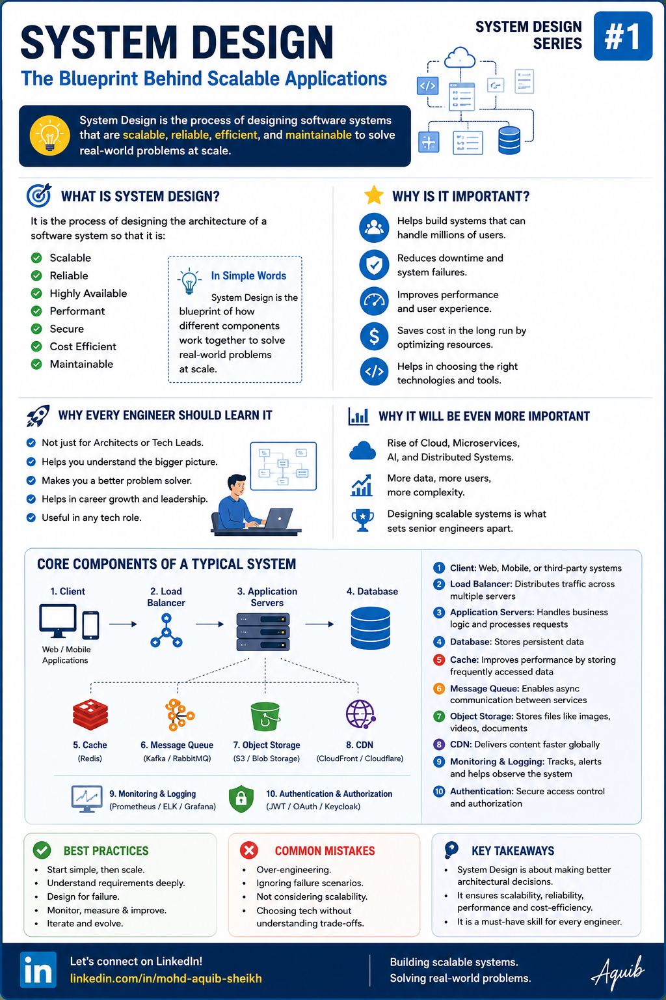
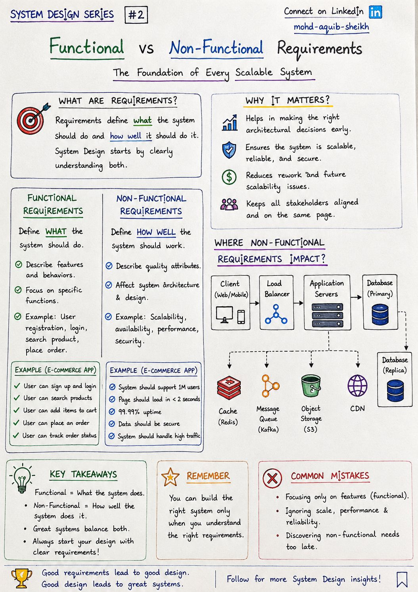
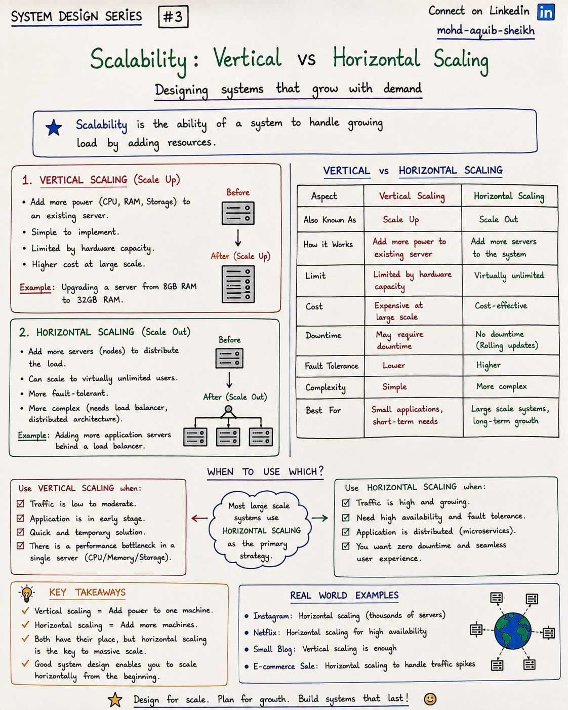
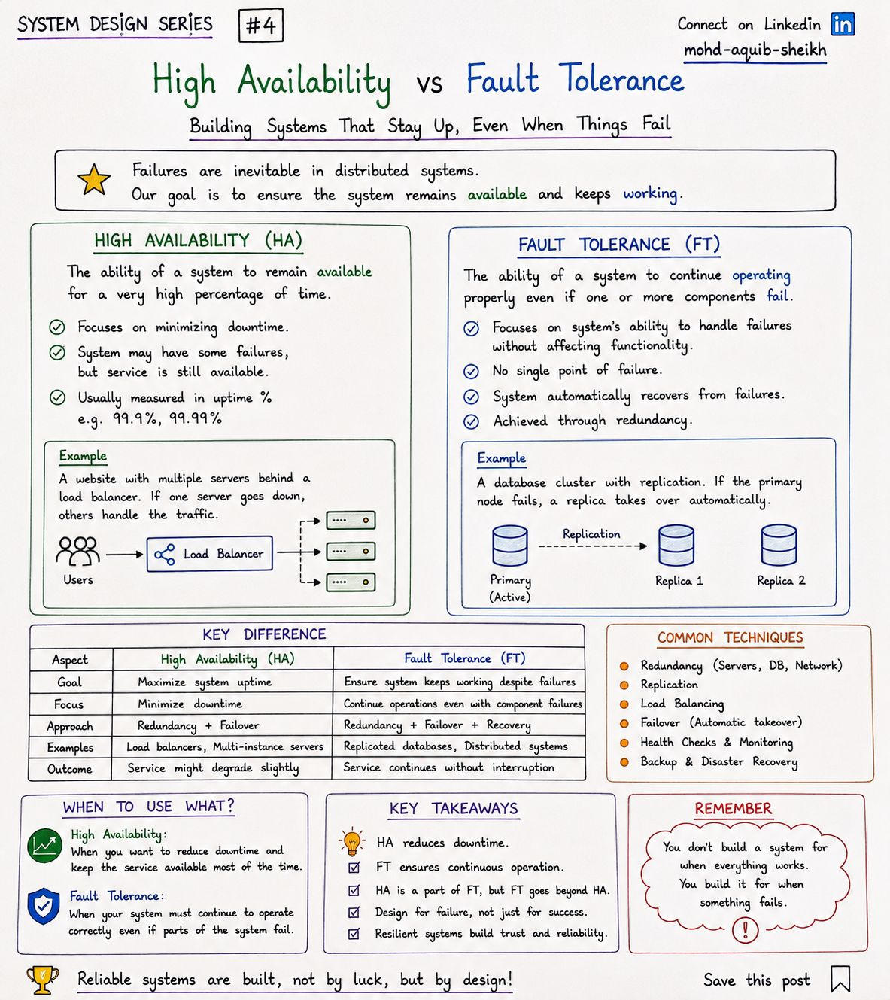
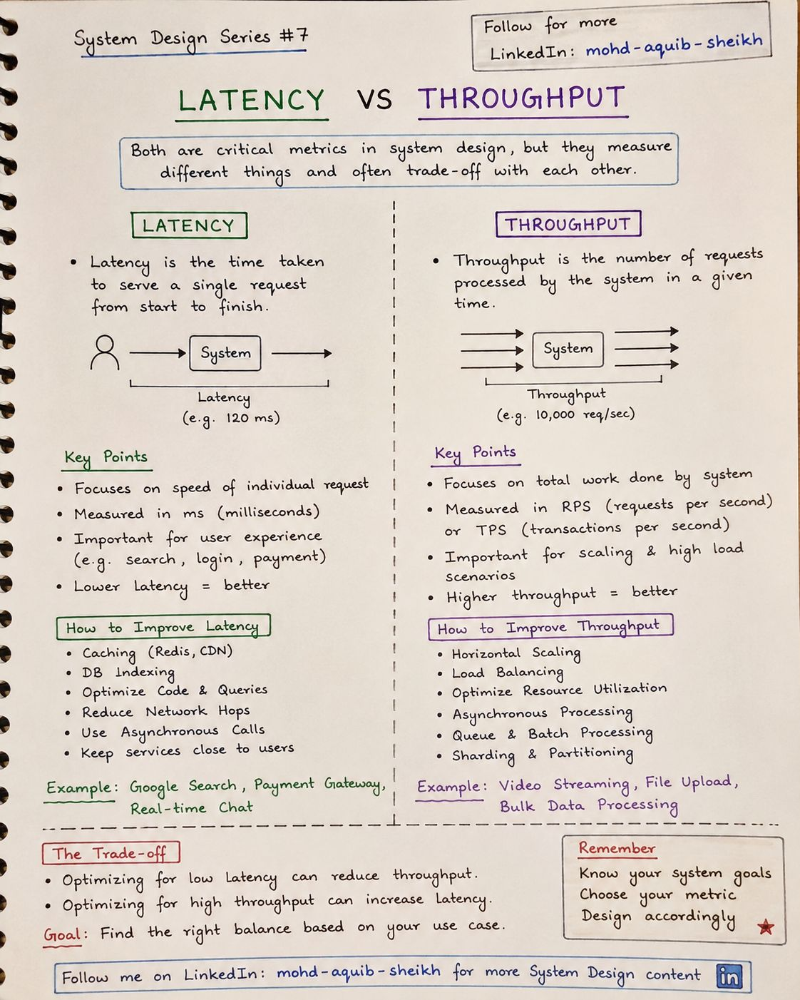

Основы: требования, масштабирование, доступность
Словарь, на котором строится всё остальное пособие. Что именно проектируют на System Design, как формулировать требования, чем масштабирование «вверх» отличается от масштабирования «вширь», и какими числами измеряют скорость и надёжность.
1.1Что такое System Design#1
System Design — это проектирование архитектуры: из каких компонентов состоит система, как они связаны и почему выбраны именно они. Цель — система, которая выдерживает рост нагрузки, переживает отказы, быстро отвечает и при этом стоит разумных денег и остаётся понятной команде.


Десять компонентов типичной системы
| # | Компонент | Зачем | Где в пособии |
|---|---|---|---|
| 1 | Клиент | Веб, мобильное приложение, сторонняя система | — |
| 2 | Балансировщик | Распределяет запросы по серверам, убирает из ротации упавшие | тема 03 |
| 3 | Серверы приложений | Бизнес-логика. В идеале без состояния — тогда их можно просто добавлять | тема 15 |
| 4 | База данных | Долговременное хранение — самый трудный для масштабирования слой | 06–08 |
| 5 | Кэш (Redis) | Быстрая память перед медленным хранилищем | 09–11 |
| 6 | Очередь сообщений (Kafka, RabbitMQ) | Асинхронная связь, сглаживание пиков | 12–14 |
| 7 | Объектное хранилище (S3) | Файлы: изображения, видео, документы, бэкапы | — |
| 8 | CDN | Раздаёт статику с узлов рядом с пользователем | — |
| 9 | Мониторинг и логи | Метрики, алерты, трассировка — без них систему нельзя эксплуатировать | — |
| 10 | Аутентификация и авторизация | Кто пришёл и что ему можно | тема 05 |
1.2Функциональные и нефункциональные требования#2
Функциональные требования отвечают на вопрос «что система делает» (зарегистрировать пользователя, оформить заказ). Нефункциональные — «насколько хорошо» (сколько пользователей, как быстро, с какой доступностью). Архитектуру определяют в основном вторые: интернет-магазин на 100 и на 10 миллионов покупателей имеет одинаковые функции и совершенно разное устройство.


Функциональные (FR)
- Описывают функции и поведение.
- Проверяются сценарием: «пользователь может…».
- Пример: регистрация, поиск товара, корзина, заказ, статус заказа.
Нефункциональные (NFR)
- Описывают качества: масштабируемость, доступность, производительность, безопасность.
- Проверяются измерением.
- Пример: 1 млн пользователей, страница за 2 с, доступность 99,99%.
1.3Масштабирование: вертикальное и горизонтальное#3
Масштабируемость — способность системы обслуживать растущую нагрузку добавлением ресурсов. Ресурсы можно добавить двумя способами: сделать один сервер мощнее (scale up) или поставить больше серверов (scale out).


| Вертикальное (scale up) | Горизонтальное (scale out) | |
|---|---|---|
| Как | Больше CPU, памяти, диска одному серверу | Больше серверов за балансировщиком |
| Предел | Самая большая доступная машина | Практически нет — пока нет общего состояния |
| Цена | Растёт быстрее, чем мощность | Растёт линейно, обычное «железо» |
| Простой при изменении | Часто нужен перезапуск | Нет (rolling update) |
| Отказоустойчивость | Единая точка отказа | Отказ одного узла не роняет сервис |
| Сложность | Низкая: код не меняется | Выше: балансировка, распределённое состояние |
| Когда | Ранний этап, умеренный трафик, быстрое решение | Высокий и растущий трафик, нужна доступность |
1.4Высокая доступность и отказоустойчивость#4
В распределённой системе отказы неизбежны: диски ломаются, сеть рвётся, релизы содержат ошибки. High Availability (HA) — сервис доступен очень большую долю времени, короткий сбой при переключении допустим. Fault Tolerance (FT) — сервис продолжает работать без заметного перерыва, даже когда компонент отказал. FT строже и дороже.


«Девятки» доступности
| Доступность | Простой в год | Простой в месяц | Что это означает на практике |
|---|---|---|---|
| 99% (две девятки) | 3,65 дня | ~7,3 часа | Один сервер, ручное восстановление |
| 99,9% | 8,8 часа | ~44 минуты | Резервирование, автоматический failover |
| 99,99% | 53 минуты | ~4,4 минуты | Несколько зон доступности, деплой без простоя |
| 99,999% | 5,3 минуты | ~26 секунд | Несколько регионов, человек в восстановлении не участвует |
- Последовательное соединение перемножает доступности. Запрос, проходящий через пять сервисов по 99,9%, имеет доступность 0,999⁵ ≈ 99,5%. Каждая синхронная зависимость делает систему менее надёжной.
- Резервирование перемножает вероятности отказа. Два независимых экземпляра по 99% дают 1 − 0,01² = 99,99% — при условии, что они действительно независимы (разные серверы, стойки, зоны) и переключение работает.
- Техники с конспекта: резервирование, репликация, балансировка, автоматический failover, health checks, бэкапы и план восстановления.
1.5Задержка и пропускная способность#7
Latency — время обработки одного запроса (мс). Throughput — сколько запросов система обрабатывает за единицу времени (RPS, TPS). Первое — про ощущения одного пользователя, второе — про суммарную работу системы; оптимизация одного нередко ухудшает другое.


Снизить задержку
- Кэш (Redis, CDN), индексы в БД.
- Меньше сетевых переходов, сервисы ближе к пользователю.
- Оптимизация запросов и кода.
- Вынести долгую работу из запроса в фон.
Поднять пропускную способность
- Горизонтальное масштабирование и балансировка.
- Асинхронная и пакетная обработка, очереди.
- Шардирование и партиционирование данных.
- Эффективное использование ресурсов (пулы, неблокирующий I/O).
- Среднее время ответа почти бесполезно. Измеряют перцентили: p50 (медиана), p95, p99. Если p99 = 2 с, каждый сотый запрос медленный, а страница, делающая 50 запросов, почти наверняка заденет «хвост». SLO формулируют по p99.
- Пакетная обработка — типичный размен. Накопить 500 записей и отправить одним запросом: пропускная способность растёт, задержка каждой записи — тоже. Так устроены
linger.msиbatch.sizeв продюсере Kafka. - Задержка растёт нелинейно около насыщения. При загрузке 50% запросы почти не ждут в очереди, при 90% время ожидания вырастает в разы. Поэтому мощность планируют с запасом, а не «под 100%».
1.6Интерактив: доступность системы из компонентов
| Доступность | Простой в год | Простой в месяц | Что это значит |
|---|---|---|---|
| 99% | 3,65 сут | 7,3 ч | внутренние инструменты |
| 99,9% | 8,8 ч | 43,8 мин | типичный веб-сервис; выкладки без простоя уже обязательны |
| 99,99% | 52,6 мин | 4,4 мин | автоматическое переключение, несколько зон; человек не успеет отреагировать вручную |
| 99,999% | 5,3 мин | 26 с | несколько регионов, каждый отказ — событие для разбора |
1.7Самопроверка
Три обязательных компонента с доступностью 99,9% каждый соединены последовательно. Доступность системы?
- 99,9%
- ≈ 99,7% — доступности перемножаются
- 99,99%
- ≈ 300%
Что из перечисленного — нефункциональное требование?
- Пользователь может оформить заказ
- Система отправляет письмо о заказе
- p99 времени ответа — не более 300 мс при 5000 запросов в секунду
- Администратор может блокировать пользователей
Почему среднее время ответа — плохая метрика?
- Оно скрывает хвост: при среднем 50 мс каждый сотый запрос может занимать 2 с; смотреть нужно перцентили p95/p99
- Его трудно вычислить
- Оно всегда больше медианы
- Его не поддерживают системы мониторинга
Почему нефункциональные требования влияют на архитектуру сильнее функциональных?
Функции определяют, какие операции и данные есть в системе, а NFR — сколько экземпляров, какие хранилища, нужна ли репликация, кэш, очередь, несколько регионов. Один и тот же набор функций при 100 и при 10 млн пользователей реализуется принципиально разными схемами.
Что мешает масштабировать сервис горизонтально и как это исправить?
Локальное состояние: сессии в памяти, файлы на локальном диске, локальные кэши с обязательной согласованностью, задачи по расписанию, которые должны выполняться в одном экземпляре. Состояние выносят во внешние хранилища (Redis, БД, S3), а единственность задач обеспечивают распределённой блокировкой или выбором лидера.
Запрос проходит через 4 сервиса с доступностью 99,9% каждый. Какова доступность цепочки и как её поднять?
0,999⁴ ≈ 99,6% — около 35 часов простоя в год вместо 8,8. Поднять можно, сократив число синхронных зависимостей (асинхронное взаимодействие через очередь, кэш с устаревшими данными как запасной вариант), резервируя каждый сервис и добавляя деградацию: ответ без необязательной части лучше ошибки.
Чем HA отличается от FT на примере базы данных?
HA: primary и реплика с автоматическим failover — при отказе сервис недоступен на время обнаружения и переключения (секунды–десятки секунд), незавершённые транзакции теряются. FT: синхронная репликация на кворум узлов (например, Raft-кластер) — отказ одного узла клиенты не замечают. Платой становится задержка записи и стоимость.
Среднее время ответа сервиса 80 мс, но пользователи жалуются на медлительность. Куда смотреть?
На перцентили. Среднее скрывает хвост: p99 может быть 3 секунды из-за пауз GC, блокировок в БД, холодного кэша или очереди к пулу соединений. Нужно смотреть распределение, а не одно число, и искать причину именно медленных запросов.